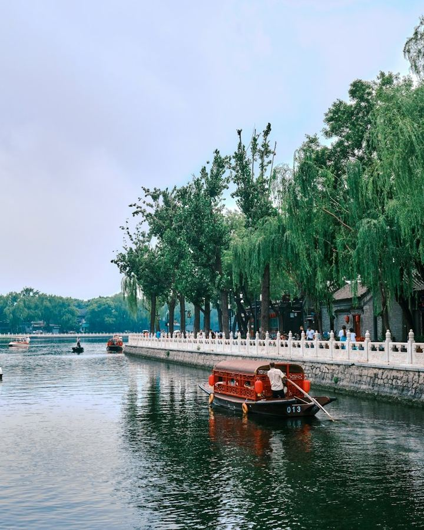
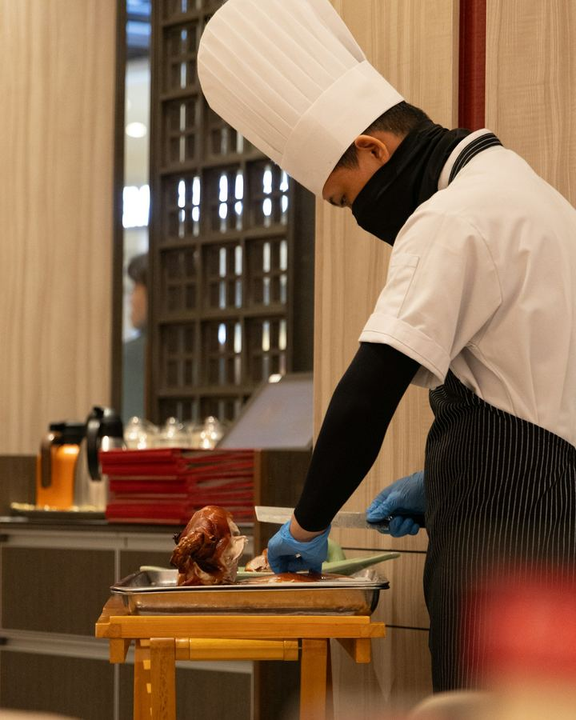
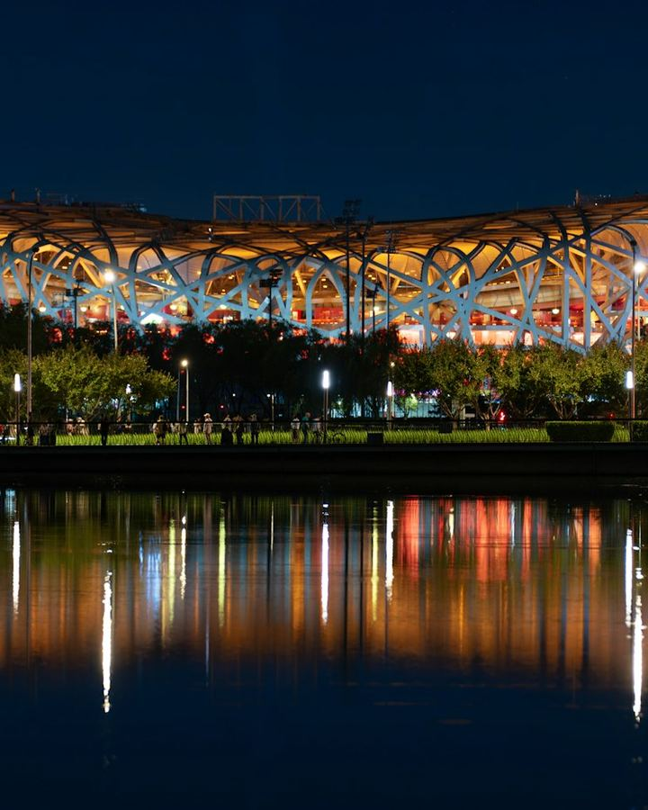
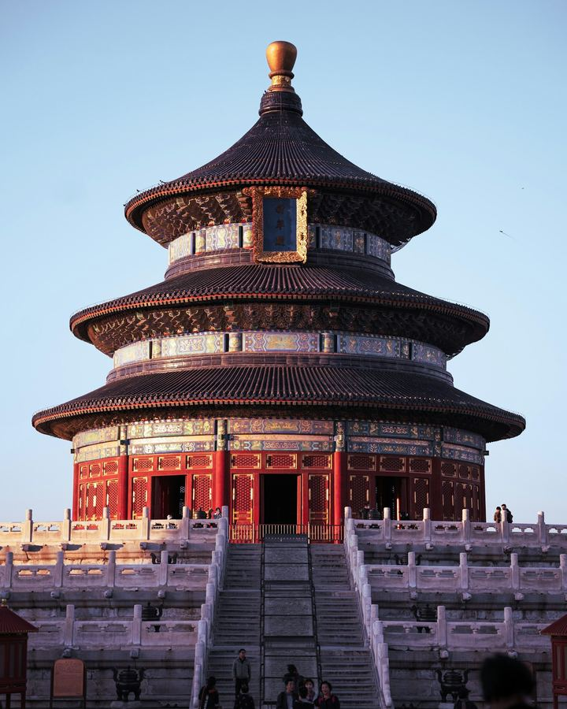
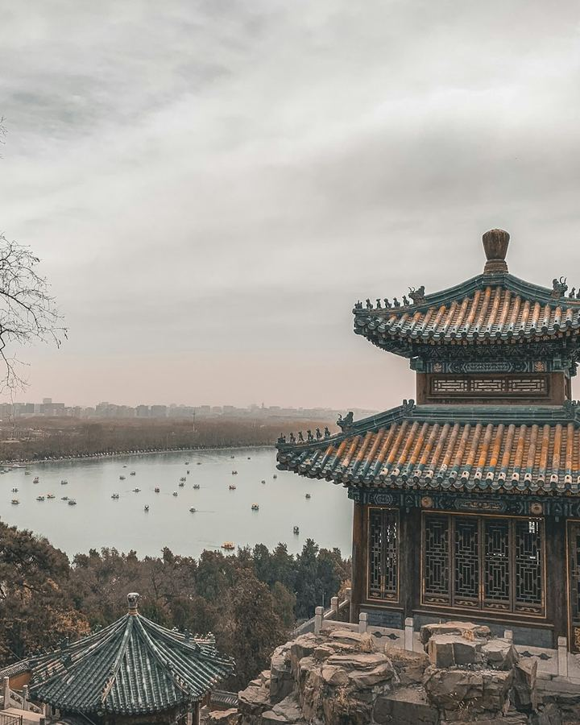
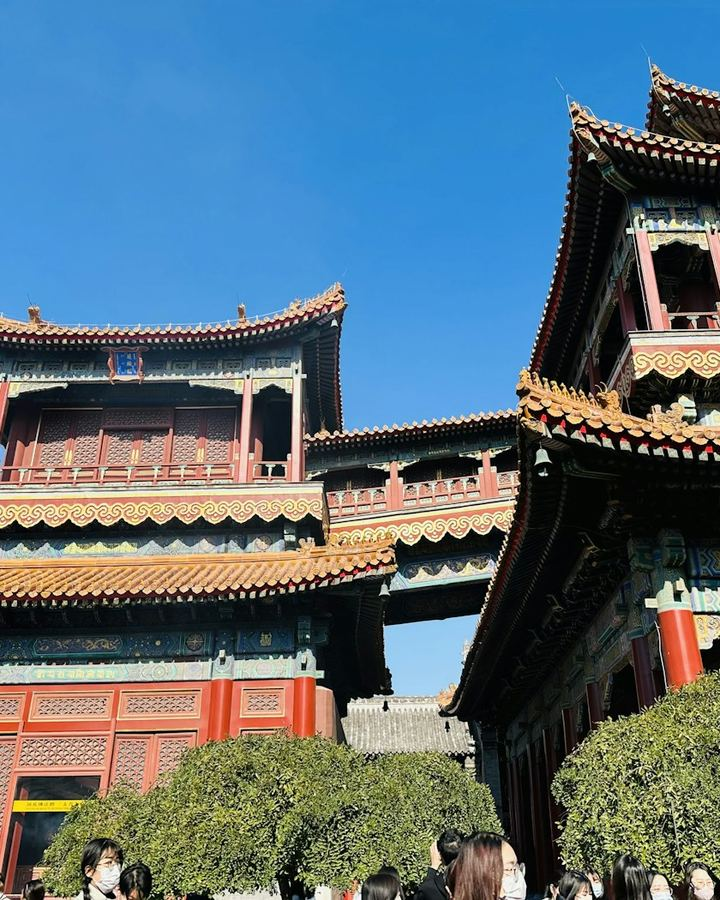
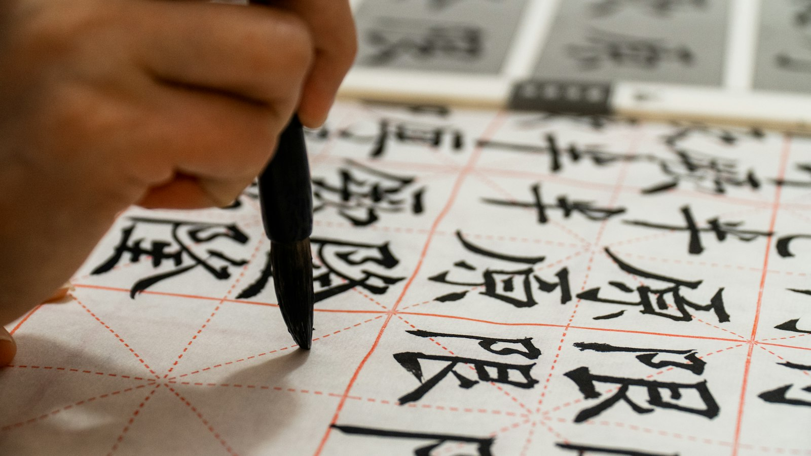
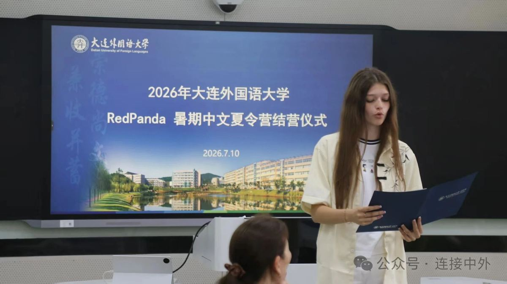

Home/Summer in China
Summer 2027 · Beijing and Dalian
Summer in China
中 国 游 学
Fourteen days of Chinese classes and culture in China, organised from arrival to departure. Separate groups for teenagers and adults.
- 14 days
- Teens 14–17 · Adults 18+
- 1,690 € per person
What's included in the programme
Classes at a university
20–25 hours of Chinese at Dalian Medical University, taught by teachers of Chinese as a foreign language. Small classes of 10–15, grouped by HSK level, and a certificate at the end.
Culture you do with your hands
Calligraphy, paper-cutting, tai chi, a taste of traditional Chinese medicine and making dumplings.
Living on campus
Twin rooms with private bathroom in the university residence, buffet meals with a bilingual menu, 24-hour security and a clinic on campus.
Groups that are looked after
One guide for every 10 participants and a group carer with every group. Teenagers and adults travel separately.
The trip, day by day
A guide itinerary; it is adapted to the dates and the group. Teen groups spend a day at a Chinese school with local students. Adult groups have more free time, shopping and cultural visits in Dalian.

01Day 1
Shichahai lakes
Arrival, welcome dinner and an evening walk by the lakes and old lanes.
02Days 2–3
The Forbidden City
The palace of the Ming and Qing emperors, hall by hall.
03Days 2–3
Tiananmen by night
The square and the gate lit up after dark.

04Days 2–3
Beijing roast duck
Dinner with the city's most famous dish, carved at the table.

05Days 2–3
Bird's Nest and Water Cube
The Olympic Park of 2008 and 2022.

06Days 2–3
Temple of Heaven
Where emperors prayed for a good harvest.

07Days 2–3
Summer Palace
Gardens, pavilions and boats on Kunming Lake.
08Days 4–5
Space and stars
The Aerospace Museum, and stargazing at the National Observatory (depending on dates).
09Days 4–5
The Great Wall at Mutianyu
Up by cable car, then a walk along the wall.

10Day 6
Lama Temple, then Dalian
Morning at the temple, then the high-speed train to Dalian and an evening by the sea.

11Days 7–11
Classes at the university
20–25 hours of Chinese at Dalian Medical University, culture workshops, a lesson in a museum, closing dinner and certificate.

12Days 12–13
Dalian by the sea
A day at a Chinese school or martial-arts school, the panda house and Sun Asia Ocean World.

13Day 14
Home
A last visit to Dalian TV or the Science Museum, and the flight home with a certificate in your suitcase.
Beijing photos: Unsplash.
Dates and price
| Group | Dates in China |
|---|---|
| A | 5–18 July 2027 |
| B | 19 July – 1 August 2027 |
| C | 2–15 August 2027 |
| D | 9–22 August 2027 |
Two versions: Teenagers (14–17) and Adults (18+). Registration opens in January 2027. Minimum 20 people per group.
Summer in China
per person
Included from arrival in China: accommodation (4–5★ hotel and university hotel), all meals, transport in China, entrance tickets, classes and materials, insurance and cultural activities.
Not included: international flights (there are direct flights Spain–Beijing), the optional Chinese classes before the trip, and personal expenses.
Safety and guarantees
A licensed travel agency
The trip in China is contracted with Dalian Shenghongfeng International Travel Agency, licence L-LN020098, Connect China's partner agency.
Insurance included
Travel-agency liability insurance of 4 million RMB, and personal accident insurance of 500,000 RMB for each participant.
Always with the group
One guide for every 10 participants, plus a group carer who stays with the group day and night.
Under-18s
Teenagers travel only with the written consent of their parents or guardians, in groups with no adults from other groups.
Who runs it
The university
Classes are taught at Dalian Medical University (founded 1947), on its Lüshun campus between the hills and the sea.
Our partner in China
Everything in China is organised by Connect China (Connect Liaoning International Cultural Exchange Co., Ltd.), based in Dalian, which runs Chinese and culture programmes for students and schools from abroad. Trips are contracted with its licensed travel agency.
Faro de Oriente
We represent Connect China in Spain for this programme: information, registration, meetings with families and preparation before the trip.
We've done it before
Red Panda · 2026
In July 2026, young students from the Russian Chinese school Red Panda spent two weeks in Dalian and Shenyang: classes at Dalian University of Foreign Languages, HSK preparation, cultural visits and a bilingual closing ceremony with an official certificate. Several of them said at the ceremony that they had finally lost their fear of speaking Chinese.
Dalian Medical University · 2025
In 2025, a group of 15 Russian teenagers spent two weeks of Chinese and culture at Dalian Medical University. More than 95% passed the official HSK 1–3 exams.



Photos: the Red Panda summer camp, Dalian University of Foreign Languages, July 2026 (Connect China).
From registration to departure
January
Registration opens. Places are confirmed with a deposit.
Spring
We confirm the group, dates and flights with each family.
June
Meeting for families before departure. Optional Chinese classes to prepare (not included in the price).
July–August
Fourteen days in China. Photos every day in the families' WhatsApp group.
Back home
Certificate from the university, and the HSK if you want to take it.
Questions about the trip
Do I need a visa?
Are flights included?
Do participants need to speak Chinese?
Who looks after teenagers?
What if the group doesn't fill up?
Are there Chinese classes before the trip?
How do families keep in touch?
When and how do I register?
Want a place in summer 2027?
Register your interest now; we'll send you the details as soon as registration opens.